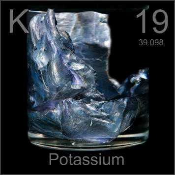

HOME
PREVIOUS
NEXT

Potassium
Atomic Weight: 39.0983
Density: 0.856 g/cm3
Melting Point: 63.38 °C
Boiling Point: 759°C
The purple tint on these soft potassium cubes is a very thin oxide coating. Exposed to air they turn black in seconds. Exposed to water they would explode, sending off characteristic purple-red flaming drops.